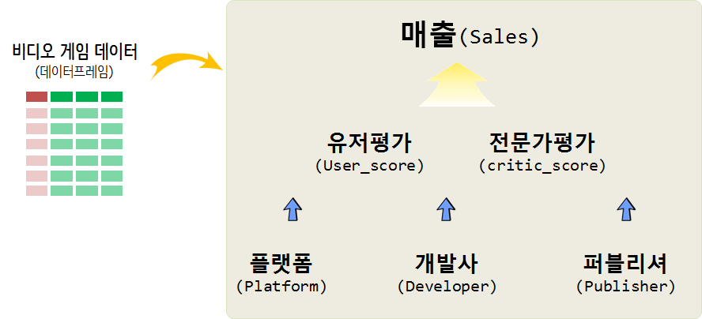

xwMOOC 데이터 제품
비디오 게임
비디오 게임 분석 방향
비디오 게임 시장별(북미, 유럽, 일본, 기타)로 나눠진 매출을 유저평점, 전문가평점과 게임 플랫폼, 개발사, 퍼블리셔 데이터를 담고 있으면 발매년도도 포함되어 있다.
global_sales 매출을 \(Y\)로 잡고 다른 변수를 설명변수로 두고 데이터를 이해하도록 한다.

데이터
VGChartz 웹사이트 데이터를 Scrapy project for data capture of vgchartz 스크립트를 통해서 데이터를 다운로드 받을 수 있다.
데이터 사전
- Rank - Ranking of overall sales
- Name - The games name
- Platform - Platform of the games release (i.e. PC,PS4, etc.)
- Year - Year of the game`s release
- Genre - Genre of the game
- Publisher - Publisher of the game
- NA_Sales - Sales in North America (in millions)
- EU_Sales - Sales in Europe (in millions)
- JP_Sales - Sales in Japan (in millions)
- Other_Sales - Sales in the rest of the world (in millions)
- Global_Sales - Total worldwide sales.
탐색적 데이터 분석
데이터 가져오기
library(tidyverse)
library(janitor)
vg_dat <- read_csv("data/Video_Games_Sales_as_at_22_Dec_2016.csv",
col_types = cols(
Name = col_character(),
Platform = col_character(),
Year_of_Release = col_character(),
Genre = col_character(),
Publisher = col_character(),
NA_Sales = col_double(),
EU_Sales = col_double(),
JP_Sales = col_double(),
Other_Sales = col_double(),
Global_Sales = col_double(),
Critic_Score = col_double(),
Critic_Count = col_double(),
User_Score = col_double(),
User_Count = col_double(),
Developer = col_character(),
Rating = col_character())) %>%
clean_names
vg_df <- vg_dat %>%
filter(!is.na(genre)) %>%
filter(! year_of_release %in% c("2020", "2017"))
vg_df %>%
sample_n(100) %>%
DT::datatable()시장(market)
발매년도로 본 시장 성장
발매년도를 통해서 년도별 시장 성장을 파악한다.
library(extrafont)
loadfonts()
vg_df %>%
group_by(year_of_release ) %>%
summarise(`세계시장규모` = sum(global_sales)) %>%
mutate(year_of_release = lubridate::ymd(paste0(year_of_release, "-01-01"))) %>%
ggplot(aes(x=year_of_release, y=`세계시장규모`, group=1)) +
geom_point() +
geom_line() +
scale_x_date(date_labels = "%y", breaks = "5 years") +
theme_light(base_family = "NanumGothic") +
labs(x="출시연도", y="세계시장규모(백만$)", title="비디오 게임 세계시장규모",
subtitle="게임 타이틀을 바탕으로 세계시장규모 추정")비디오 게임 시장별(북미, 유럽, 일본, 기타)로 나눠진 매출을 살펴보자.
library(extrafont)
loadfonts()
library(gganimate)
vg_df %>%
select(year_of_release, na_sales, eu_sales, jp_sales, other_sales) %>%
gather(mkt_segment, sales, -year_of_release) %>%
group_by(year_of_release, mkt_segment) %>%
summarise(`세계시장규모` = sum(sales)) %>%
ungroup() %>%
mutate(year_of_release = lubridate::ymd(paste0(year_of_release, "-01-01"))) %>%
ggplot(aes(x=year_of_release, y=`세계시장규모`, color=mkt_segment)) +
geom_point() +
geom_line() +
scale_x_date(date_labels = "%Y", breaks = "5 years") +
theme_light(base_family = "NanumGothic") +
labs(x="", y="시장규모(백만$)", title="비디오 게임 지역별 시장규모",
subtitle="게임 타이틀을 바탕으로 시장규모 추정",
color="세분화된 시장")플랫폼, 개발사, 퍼블리셔
플랫폼, 개발사, 퍼블리셔별로 상위 플랫폼 및 업체를 중심으로 살펴본다.
플랫폼
vg_df %>%
count(platform, sort=TRUE)# A tibble: 31 x 2
platform n
<chr> <int>
1 PS2 2161
2 DS 2151
3 PS3 1331
4 Wii 1320
5 X360 1262
6 PSP 1209
7 PS 1197
8 PC 974
9 XB 824
10 GBA 822
# ... with 21 more rowsvg_df %>%
mutate(platform_fct = fct_lump(platform, 11)) %>%
group_by(platform_fct, year_of_release) %>%
summarise(`매출` = sum(global_sales)) %>%
mutate(year_of_release = lubridate::ymd(paste0(year_of_release, "-01-01"))) %>%
ggplot(aes(x=year_of_release, y=`매출`, fill=platform_fct, color=platform_fct)) +
geom_line(size=1.5) +
facet_wrap(~platform_fct) +
scale_x_date(date_labels = "%Y", breaks = "5 years") +
theme_light(base_family = "NanumGothic") +
labs(x="", y="매출(백만$)", title="비디오 게임 플랫폼별 시장규모",
subtitle="매출 순위 상위 11개 플랫폼 기준",
color="플랫폼") +
theme(legend.position = "none")개발사
top_developer_v <- vg_df %>%
count(developer, wt=global_sales, sort=TRUE) %>%
filter(!is.na(developer)) %>%
top_n(11, wt=n) %>%
pull(developer)
vg_df %>%
mutate(developer_fct = ifelse(developer %in% top_developer_v, developer, "Other")) %>%
group_by(developer_fct, year_of_release) %>%
summarise(`매출` = sum(global_sales)) %>%
mutate(year_of_release = lubridate::ymd(paste0(year_of_release, "-01-01"))) %>%
ggplot(aes(x=year_of_release, y=`매출`, fill=developer_fct, color=developer_fct)) +
geom_line(size=1.5) +
facet_wrap(~developer_fct) +
scale_x_date(date_labels = "%Y", breaks = "5 years") +
theme_light(base_family = "NanumGothic") +
labs(x="", y="매출(백만$)", title="비디오 게임 개발사(developer) 시장규모",
subtitle="매출 순위 상위 11개 개발사 기준",
color="개발사") +
theme(legend.position = "none")퍼블리셔
top_publisher_v <- vg_df %>%
count(publisher, wt=global_sales, sort=TRUE) %>%
top_n(11, wt=n) %>%
pull(publisher)
vg_df %>%
mutate(publisher_fct = ifelse(publisher %in% top_publisher_v, publisher, "Other")) %>%
group_by(publisher_fct, year_of_release) %>%
summarise(`매출` = sum(global_sales)) %>%
mutate(year_of_release = lubridate::ymd(paste0(year_of_release, "-01-01"))) %>%
ungroup() %>%
ggplot(aes(x=year_of_release, y=`매출`, group=publisher_fct, color=publisher_fct)) +
geom_line(size=1.5) +
facet_wrap(~publisher_fct) +
scale_x_date(date_labels = "%Y", breaks = "5 years") +
theme_light(base_family = "NanumGothic") +
labs(x="", y="매출(백만$)", title="비디오 게임 개발사(developer) 시장규모",
subtitle="매출 순위 상위 11개 개발사 기준",
color="개발사") +
theme(legend.position = "none")매출 예측 모형
게임 타이틀 매출 예측을 위해서 출시년도(year_of_release), 전문가 평점(critic_score), 전문가 참여수(“critic_count”), 유저 평점(“user_score”), 유저 참여수(“user_count”)를 예측변수로 넣어 매출을 예측해보자.
\[\text{게임 타이틀 매출} = f(\text{year_of_release, critic_score, user_score, ...}) + \epsilon\]
게임 타이틀 매출에 가장 영향을 많이 주는 영향을 찾아내기 위해 randomForest 알고리즘을 돌려서 user_count, critic_count가 영향을 많이 주는 것으로 나타난다.
library(broom)
library(randomForest)
vg_mod_df <- vg_df %>%
select(name, global_sales, year_of_release, critic_score, critic_count, user_score, user_count) %>%
mutate(year_of_release = as.integer(year_of_release)) %>%
filter(complete.cases(.))
vg_rf <- randomForest(log(global_sales) ~ year_of_release+critic_score+critic_count+user_score+user_count, data=vg_mod_df)
varImpPlot(vg_rf)퍼블리셔 별로 차이는 나지만 대체로 사용자 참여수가 높아질수록 매출이 높아지는 경향을 나타내고 있다.
vg_df %>%
mutate(publisher_fct = ifelse(publisher %in% top_publisher_v, publisher, "Other")) %>%
ggplot(aes(x=user_count, y=global_sales)) +
geom_point() +
scale_x_sqrt() +
scale_y_sqrt() +
geom_smooth() +
theme_light(base_family = "NanumGothic") +
labs(x="사용자 참여수", y="매출(백만$)", title="사용자 참여수와 매출 상관관계",
subtitle="",
color="개발사") +
theme(legend.position = "none") +
facet_wrap(~publisher_fct)